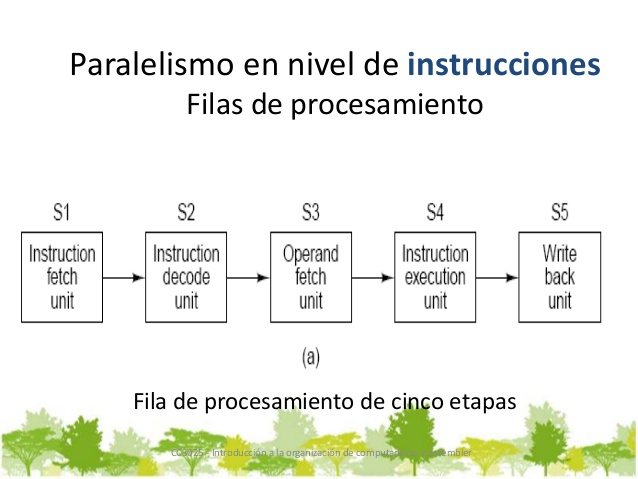
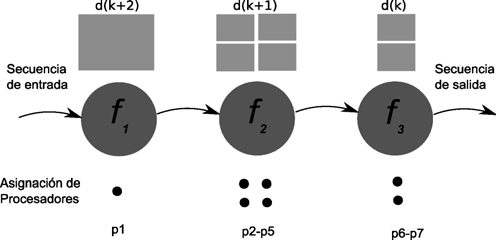
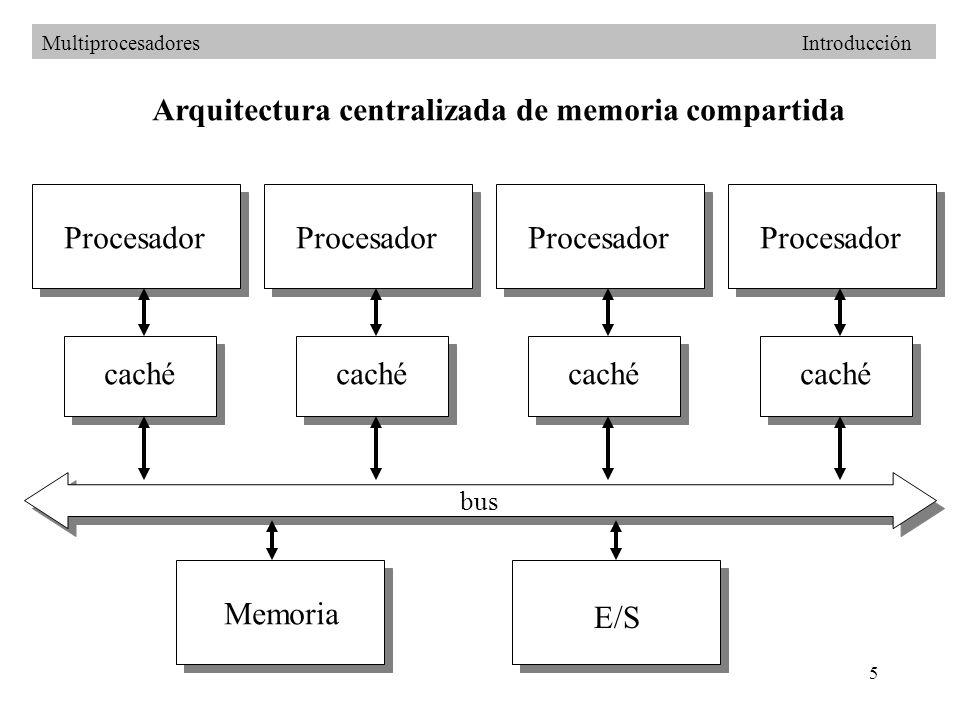
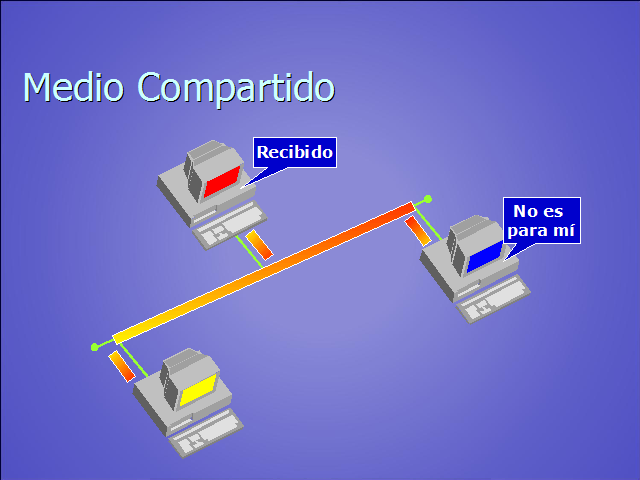
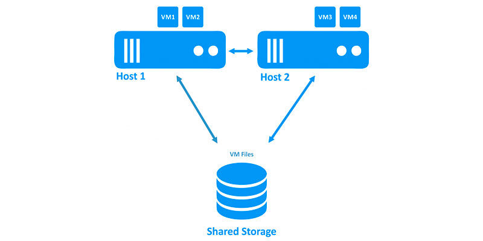
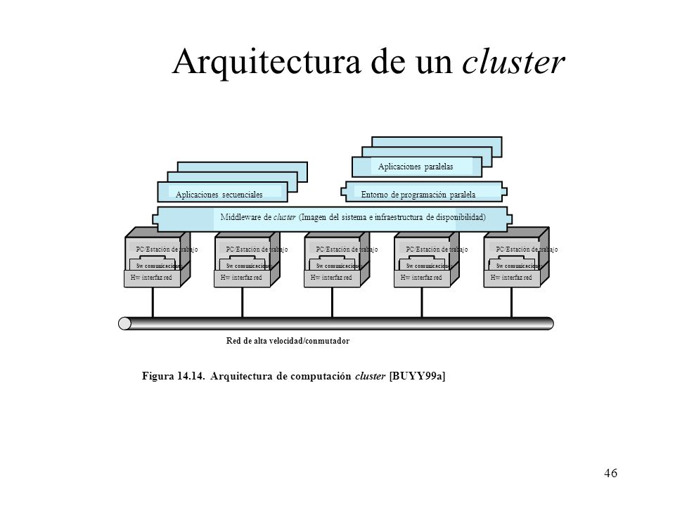
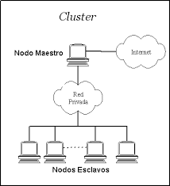

UNIDAD 4
"Procesamiento Paralelo"

4.1. Estructura
La computación paralela es una forma de cómputo en la que muchas instrucciones se ejecutan simultáneamente, operando sobre el principio de que problemas grandes, a menudo se pueden dividir en unos más pequeños, que luego son resueltos simultáneamente(en paralelo). Hay varias formas diferentes de computación paralela: paralelismo a nivel de bit, paralelismo a nivel de instrucción, paralelismo de datos y paralelismo de tareas. El paralelismo se ha empleado durante muchos años, sobre todo en la computación de altas prestaciones, pero el interés en ella ha crecido últimamente debido a las limitaciones físicas que impiden el aumento de la frecuencia. Las computadoras paralelas pueden clasificarse según el nivel de paralelismo que admite su hardware: equipos con procesadores multinúcleo y multi-procesador que tienen múltiples elementos de procesamiento dentro de una sola máquina y los clústeres, MPPS y grids que utilizan varios equipos para trabajar en la misma tarea. Muchas veces, para acelerar la tareas específicas, se utilizan arquitecturas especializadas de computación en paralelo junto a procesadores tradicionales
4.2. Tipos de Computación Paralela
" Paralelismo A Nivel De Bit"
en la década de 1970 hasta alrededor de 1986, la aceleración en la arquitectura de computadores se lograba en gran medida duplicando el tamaño de la palabra en la computadora, la cantidad de información que el procesador puede manejar por ciclo. El aumento del tamaño de la palabra reduce el número de instrucciones que el procesador debe ejecutar para realizar una operación en variables cuyos tamaños son mayores que la longitud de la palabra. Por ejemplo, cuando un procesador de 8 bits debe sumar dos enteros de 16 bits, el procesador primero debe adicionar los 8 bits de orden inferior de cada número entero con la instrucción de adición, a continuación, añadir los 8 bits de orden superior utilizando la instrucción de adición con acarreo que tiene en cuenta el bit de acarreo de la adición de orden inferior, en este caso un procesador de 8 bits requiere dos instrucciones para completar una sola operación, en donde un procesador de 16 bits necesita una sola instrucción para poder completarla.
"Paralelismo a Nivel De Instruccion"
Un programa de ordenador es, en esencia, una secuencia de instrucciones ejecutadas por un procesador. Estas instrucciones pueden reordenarse y combinarse en grupos que luego son ejecutadas en paralelo sin cambiar el resultado del programa. Esto se conoce como paralelismo a nivel de instrucción. Los procesadores modernos tienen ”pipeline” de instrucciones de varias etapas. Cada etapa en el pipeline corresponde a una acción diferente que el procesador realiza en la instrucción correspondiente a la etapa; un procesador con un pipeline de N etapas puede tener hasta n instrucciones diferentes en diferentes etapas de finalización.
"Paralelismo De Datos"
El paralelismo de datos es el paralelismo inherente en programas con ciclos, que se centra en la distribución de los datos entre los diferentes nodos computacionales que deben tratarse en paralelo. La paralelización de ciclos conduce a menudo a secuencias similares de operaciones (no necesariamente idénticas) o funciones que se realizan en los elementos de una gran estructura de datos. Muchas de las aplicaciones científicas y de ingeniería muestran paralelismo de datos. Durante muchos años, la computación paralela se ha aplicado en la computación de altas prestaciones, pero el interés en ella ha aumentado en los últimos años debido a las restricciones físicas que impiden el escalado en frecuencia. La computación paralela se ha convertido en el paradigma dominante en la arquitectura de computadores, principalmente en los procesadores multinúcleo.
"Paralelismo Tareas"
El paralelismo de tareas es la característica de un programa paralelo en la que cálculos completamente diferentes se pueden realizar en cualquier conjunto igual o diferente de datos. Esto contrasta con el paralelismo de datos, donde se realiza el mismo cálculo en distintos o mismos grupos de datos. El paralelismo de tareas por lo general no escala con el tamaño de un problema. Una dependencia de terminación de ciclo es la dependencia de una iteración de un ciclo en la salida de una o más iteraciones anteriores. Las dependencias de terminación de ciclo evitan la paralelización de ciclos.

4.3 Sistemas de memoria compartida
Cada procesador posee su propia unidad de control ejecuta su propio código sobre sus propios datos, puede ejecutar cualquier aplicación (no solo programas vectoriales).
"Memoria Compartida Centralizada"
La memoria compartida por todos los procesadores y accesible desde cualquiera. Descompuesta en varios módulos para permitir el acceso concurrente de varios procesadores
"4.3.1 Redes de interconexión dinámicas"
Las redes de interconexión dinámicas son convenientes en los casos en que se
desee una red de propósito general ya que son fácilmente reconfigurables.
También por eso, este tipo de Redes facilitan mucho la escalabilidad.
Las principales topologías de
redes dinámicas son las siguientes:
Buses
Redes de líneas cruzadas o matriz de conmutación (crossbar)
Redes multietapa o MIN (Multistage Interconnection Network)
"4.3.1.1 Redes de medio compartido "
Ocurre cuando varios host tiene acceso al mismo medio. Por ejemplo, si varios PC se encuentran conectados al mismo cable físico, a la misma fibra óptica entonces se dice que comparten el mismo entorno de medios.
"4.3.1.2 Redes conmutadas"
Consiste en un conjunto de nodos interconectados entre si, a través de medios de
transmisión, formando la mayoría de las veces una topología mallada, donde la
información se transfiere encaminándola del nodo de origen al nodo destino
mediante conmutación entre nodos intermedios. Una transmisión de este tipo tiene
3 fases:
Establecimiento de la conexión
Transferencia de la información
Liberación de la conexión
4.3.2 Coherencia de cache
La coherencia de cache hace referencia a la integridad de los datos almacenados en las caches locales de los recursos compartidos. La coherencia de la cache es un caso especial de la coherencia de memoria.

4.4 Sistemas de memoria distribuida. Multicomputadores:Clusters
Un cluster es una tipo de arquitectura paralela distribuida que consiste de un conjunto de computadores independientes (y bajo coste en principio) interconectados operando de forma conjunta como un único recurso computacional
"4.4.1 Redes de interconexión estáticas "
"4.4.2 Cluster "
El término clúster se aplica a los conjuntos o conglomerados de computadoras construidos mediante la utilización de hardwares comunes y que se comportan como si fuesen una única computadora. La tecnología de clústeres ha evolucionado en apoyo de actividades que van desde aplicaciones de supercómputo y software de misiones críticas, servidores web y comercio electrónico, hasta bases de datos de alto rendimiento, entre otros usos.
"4.4.3 Programación de clusters "
Programación paralela: estos cluster están diseñados y optimizados para correr programas paralelos. En este caso, los programas tienen que ser hechos específicamente para funcionar en forma paralela. Típicamente estos programas son modelos que requieren realizar gran cantidad de cálculos numéricos.
"Rendimiento de los clusters"
Un cluster de alto rendimiento es un conjunto de ordenadores que está diseñado
para dar altas prestaciones en cuanto a capacidad de cálculo. Los motivos para
utilizar un cluster de alto rendimiento son:
el tamaño del problema por resolver
el precio de la máquina necesaria para resolverlo.
Por medio de un cluster se pueden conseguir capacidades de cálculo superiores a
las de un ordenador más caro que el costo conjunto de los ordenadores del
cluster